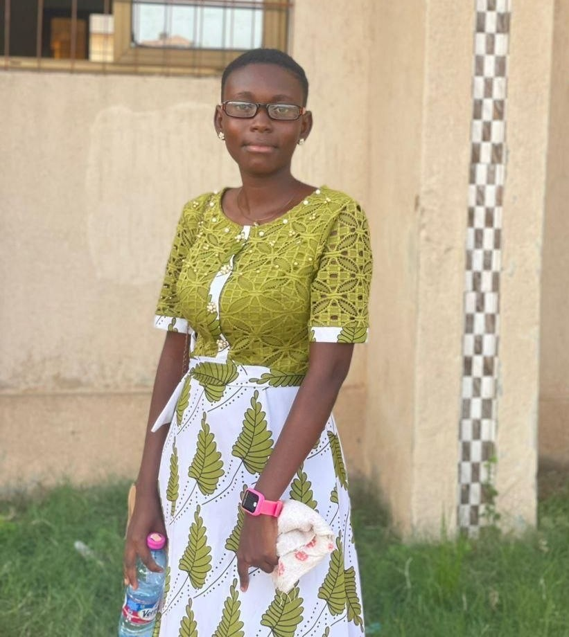
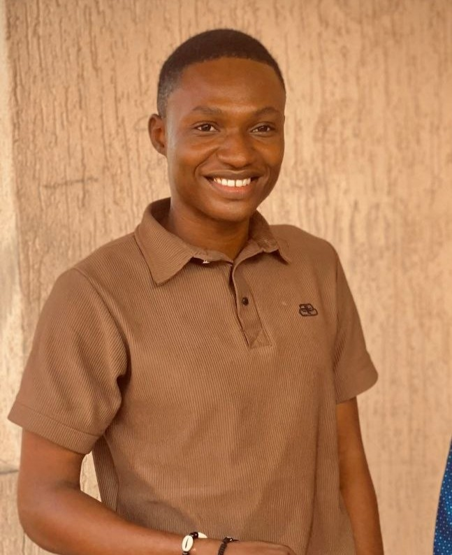

Cadre institutionnel
Enregistrement légal de l'association
Constitution du dossier et obtention du récépissé auprès du ministère compétent, statuts et règlement intérieur adoptés en assemblée générale.
Le Youth Panel Communal Agoè-Nyivé 4 mobilise les jeunes, en particulier les jeunes filles, autour de la participation citoyenne, de l'employabilité, du leadership communautaire, de la protection de l'enfance et de la lutte contre les violences basées sur le genre.


Youth Panel Communal Agoè-Nyivé 4 (YPC) est né le 10 décembre 2024, d'un constat simple porté par un groupe de jeunes de la commune : les espaces de décision et d'action locale parlent rarement la langue de la jeunesse, et plus rarement encore celle des jeunes filles. Plutôt que d'attendre une place à la table, ses membres fondateurs ont choisi d'en créer un panel, un espace où les questions de participation citoyenne, d'employabilité, de leadership et de protection sont portées par les jeunes eux-mêmes, pour eux-mêmes et pour leur communauté.
En un peu plus d'un an d'existence, l'association s'est déjà positionnée comme un acteur identifié de la commune d'Agoè-Nyivé 4 : 21 membres, dont 11 jeunes filles (52 %), mobilisés autour d'actions de sensibilisation sur les violences basées sur le genre, de promotion de la cohésion sociale et de protection de l'enfance, en tissant des premiers liens avec les autorités locales et plusieurs structures communautaires actives dans le développement de la jeunesse.
Une jeunesse responsable — en particulier les jeunes filles — engagée et capable de contribuer au développement durable de sa communauté à travers l'expression de son leadership, porteuse d'une transformation des normes sociales néfastes et du cadre juridique relatif à l'égalité des sexes.
Mobiliser les jeunes de la commune d'Agoè-Nyivé 4, et en particulier les jeunes filles, autour de la participation citoyenne, de l'employabilité, du leadership communautaire, de la protection des enfants et des jeunes, et de la lutte contre les violences basées sur le genre.
Le YPC agit comme un espace où les jeunes portent eux-mêmes les causes qui les concernent, avec une attention particulière à la place des jeunes filles dans chaque action menée.
Créer des espaces où les jeunes, en particulier les jeunes filles, prennent part aux décisions qui concernent leur commune.
Axe prioritaireAccompagner les jeunes vers des compétences et des opportunités concrètes d'insertion socio-économique.
Axe prioritaireFormer une nouvelle génération de leaders capables de fédérer et de porter des projets pour leur communauté.
Axe prioritaireSensibiliser et agir pour la protection des enfants et des jeunes contre toute forme de violence et d'abus.
Axe prioritaireSensibiliser la communauté et accompagner les victimes de violences basées sur le genre, avec 52 % de filles au sein du panel.
Axe prioritaireConstruire des partenariats durables avec la mairie et les acteurs locaux pour le développement de la commune.
Axe prioritaireQuelques temps forts de la vie du Youth Panel depuis sa création — retrouvez le détail complet de chaque action sur la page dédiée.
Constitution du dossier et obtention du récépissé auprès du ministère compétent, statuts et règlement intérieur adoptés en assemblée générale.

Séances de sensibilisation communautaire et en milieu scolaire sur les violences basées sur le genre et la cohésion sociale.

Établissement d'un contact structuré avec les autorités locales et les structures communautaires actives dans le développement de la jeunesse.
Des jeunes engagés, dont 52 % de filles, qui portent au quotidien les actions et la voix du Youth Panel Communal Agoè-Nyivé 4.
Leadership reconnu et fédérateur, à l'initiative de la structuration institutionnelle du Youth Panel depuis 2024.

Pilote la communication interne et externe du Youth Panel ainsi que l'animation des réseaux sociaux.

assure la coordination et la mise en œuvre des différents programmes et projets du Youth Panel.
Gère les aspects financiers et comptables du Youth Panel.
Assure le suivi et l'évaluation des activités et des projets du Youth Panel.
Retrouvez nos actualités, nos actions de terrain et nos appels à mobilisation sur nos différentes plateformes.
Rejoignez un panel de jeunes engagés, en particulier les jeunes filles, et prenez part à des actions concrètes pour votre communauté.